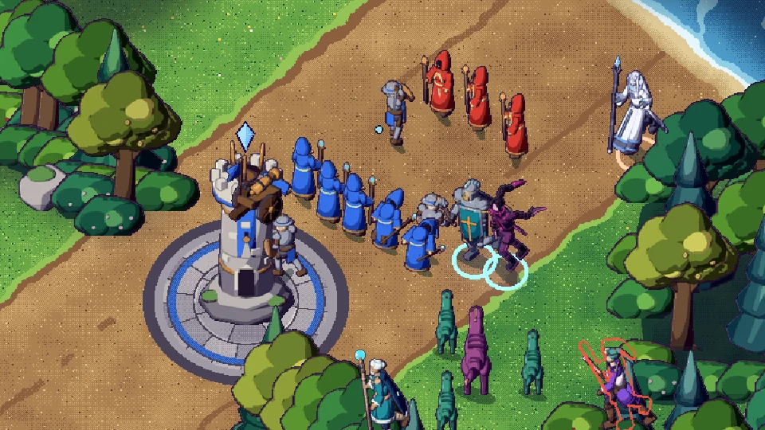
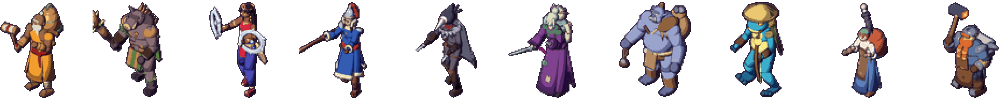

Devlog #10: Find Match, ranked and ten new faces
Two days of work, three alpha builds. Altarhold now plays like a real online game: you sign in, press one button and get a match. Then you climb a ladder. The world around the heroes was rebuilt too, and ten more heroes are on the way.
One button to play
The old lobby is gone. You sign in with your username and land on your player dashboard, and Find Match puts you in a game with players near your skill level. From there it goes straight into hero select. Everyone needs an account now, so every match counts toward your history and rating.
The dashboard works like the ones in the big MOBAs. Your profile, party and Find Match sit on the left, with the newest devlog posts and your match history in the middle. Your friends list is on the right. Add friends by username, invite them to your party, and the party queues together when its leader presses the button.
A ranked ladder, coming in the next alpha
The next alpha build splits matchmaking into two queues. Unranked is for practice and trying new heroes. Ranked opens after a few games and puts you on a ladder that climbs from Wanderer to Relic Lord, with divisions in each tier. Wins earn ranked points and losses cost them, and the amount shifts a little when you beat a stronger team. Your first ranked games are placements, and the ladder resets softly each season. Leaving a ranked game early costs you.
A world made in 3D

After the heroes, the rest of the map got the same treatment. Minions, every jungle creep, towers, cores, fountains, the altar, trees, rocks, ruins and lanterns are all modelled in Blender and baked into pixel art. The ground is richer too: flagstone plazas at the bases, a rune-ringed arena floor, wheel ruts in the lanes, grass tufts and lily pads in the river.
Scenery never hides anyone. When a hero, minion or creep walks behind a tree or a tower, you still see them through it.
Juno Galecaller and Sela Dawnsong were rebuilt too, so all ten heroes are now baked from 3D models, each with its own cast animation for every skill.
Ten new heroes on the way

Gorran Bellwarden, Varga Thornhide, Sefa Twinmoon, Ilka Spearwind, Corvin Ashfeather, Morwen Hexthread, Bramm Stonesling, Fen Mirelight, Odalys Kilnwright and Tobren Anvilheart are modelled and animated from all eight directions, with a cast for each skill. Their abilities come next. To make room for them, the next alpha's hero select groups heroes into Strength, Agility and Intelligence columns and has a search box, so a much bigger roster fits on one screen.
Clearer and fairer matches
- You always see your own team in blue and the enemy in red, whichever side you play on.
- Level-ups, unspent skill and attribute points, and every relic arena moment are now hard to miss, with banners, pulsing badges, a pillar of light at the pit and an arrow when the arena is off screen.
- Fountains fight back against enemy heroes who dive the base, and towers can't be walked around the side anymore.
- Minions stay in their lane instead of chasing heroes across the map.
- Esc opens a game menu instead of leaving the match, and in the next alpha, clicking anywhere on a unit targets it.
- The game server now protects itself against floods and misbehaving connections, and busy online matches run with less lag.
Next
Kits for the ten new heroes, and more polish from what alpha testers tell us. Join the conversation on our Discord.
Proof of date
git commit 1a7d3a9b71ae8f2b84a07bc544526c615003159b